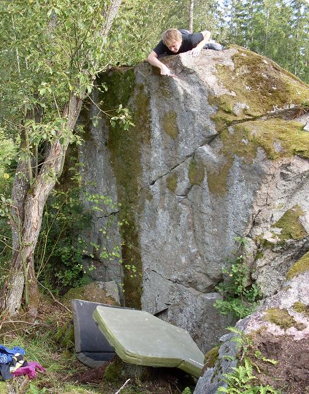

Kategori:Uppsala
Litet område med viss utvecklingsmöjlighet. Det finns både hårt och lite längre (blocket med jaktstugan) och lågt och lätt att borsta fram.
Lättast att nå med cykel via Hågavägen eller Lurbovägen.
Den här flashar jag nog, 6A*, sittstart (Lätt överhängande väggklättring med fin pocket)
First ascent, yay!, 4 (Sva med överdrivet bra krimp en bit upp)
Copyright (C) Permission is granted to copy, distribute and/or modify this document under the terms of the GNU Free Documentation License, Version 1.3